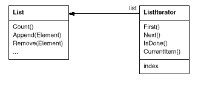
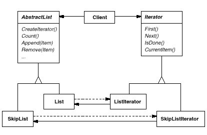
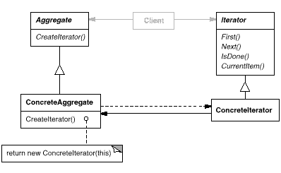

template <class Item>
class List {
public:
List(long size = DEFAULT_LIST_CAPACITY);
long Count() const;
Item& Get(long index) const;
// ...
};
template <class Item>
class Iterator {
public:
virtual void First() = 0;
virtual void Next() = 0;
virtual bool IsDone() const = 0;
virtual Item CurrentItem() const = 0;
protected:
Iterator();
};
template <class Item>
class ListIterator : public Iterator<Item> {
public:
ListIterator(const List<Item>* aList);
virtual void First();
virtual void Next();
virtual bool IsDone() const;
virtual Item CurrentItem() const;
private:
const List<Item>* _list;
long _current;
};
template <class Item>
ListIterator<Item>::ListIterator (
const List<Item>* aList
) : _list(aList), _current(0) {
}
template <class Item>
void ListIterator<Item>::First () {
_current = 0;
}
template <class Item>
void ListIterator<Item>::Next () {
_current++;
}
template <class Item>
bool ListIterator<Item>::IsDone () const {
return _current >= _list->Count();
}
template <class Item>
Item ListIterator<Item>::CurrentItem () const {
if (IsDone()) {
throw IteratorOutOfBounds;
}
return _list->Get(_current);
}
void PrintEmployees (Iterator<Employee*>& i) {
for (i.First(); !i.IsDone(); i.Next()) {
i.CurrentItem()->Print();
}
}
List<Employee*>* employees;
// ...
ListIterator<Employee*> forward(employees);
ReverseListIterator<Employee*> backward(employees);
PrintEmployees(forward);
PrintEmployees(backward);
SkipList<Employee*>* employees;
// ...
SkipListIterator<Employee*> iterator(employees);
PrintEmployees(iterator);
template <class Item>
class AbstractList {
public:
virtual Iterator<Item>* CreateIterator() const = 0;
// ...
};
template <class Item>
Iterator<Item>* List<Item>::CreateIterator () const {
return new ListIterator<Item>(this);
}
// we know only that we have an AbstractList
AbstractList<Employee*>* employees;
// ...
Iterator<Employee*>* iterator = employees->CreateIterator();
PrintEmployees(*iterator);
delete iterator;
template <class Item>
class IteratorPtr {
public:
IteratorPtr(Iterator<Item>* i): _i(i) { }
~IteratorPtr() { delete _i; }
Iterator<Item>* operator->() { return _i; }
Iterator<Item>& operator*() { return *_i; }
private:
// disallow copy and assignment to avoid
// multiple deletions of _i:
IteratorPtr(const IteratorPtr&);
IteratorPtr& operator=(const IteratorPtr&);
private:
Iterator<Item>* _i;
};
AbstractList<Employee*>* employees;
// ...
IteratorPtr<Employee*> iterator(employees->CreateIterator());
PrintEmployees(*iterator);
template <class Item>
class ListTraverser {
public:
ListTraverser(List<Item>* aList);
bool Traverse();
protected:
virtual bool ProcessItem(const Item&) = 0;
private:
ListIterator<Item> _iterator;
};
template <class Item>
ListTraverser<Item>::ListTraverser (
List<Item>* aList
) : _iterator(aList) { }
template <class Item>
bool ListTraverser<Item>::Traverse () {
bool result = false;
for (
_iterator.First();
!_iterator.IsDone();
_iterator.Next()
) {
result = ProcessItem(_iterator.CurrentItem());
if (result == false) {
break;
}
}
return result;
}
class PrintNEmployees : public ListTraverser<Employee*> {
public:
PrintNEmployees(List<Employee*>* aList, int n) :
ListTraverser<Employee*>(aList),
_total(n), _count(0) { }
protected:
bool ProcessItem(Employee* const&);
private:
int _total;
int _count;
};
bool PrintNEmployees::ProcessItem (Employee* const& e) {
_count++;
e->Print();
return _count < _total;
}
List<Employee*>* employees;
// ...
PrintNEmployees pa(employees, 10);
pa.Traverse();
ListIterator<Employee*> i(employees);
int count = 0;
for (i.First(); !i.IsDone(); i.Next()) {
count++;
i.CurrentItem()->Print();
if (count >= 10) {
break;
}
}
template <class Item>
class FilteringListTraverser {
public:
FilteringListTraverser(List<Item>* aList);
bool Traverse();
protected:
virtual bool ProcessItem(const Item&) = 0;
virtual bool TestItem(const Item&) = 0;
private:
ListIterator<Item> _iterator;
};
template <class Item>
void FilteringListTraverser<Item>::Traverse () {
bool result = false;
for (
_iterator.First();
!_iterator.IsDone();
_iterator.Next()
) {
if (TestItem(_iterator.CurrentItem())) {
result = ProcessItem(_iterator.CurrentItem());
if (result == false) {
break;
}
}
}
return result;
}